<title>Piezas Instagram School</title>
<meta name="claude:viewport-fit-sides" content="cover">
<style>
/* Layout: one column of groups, each a grid of pieces at their true proportions */
:root{--bg:#F3F3F5;--fg:#22232B;--muted:#6E655B;--line:#DCCFBE;--card:#FBF8F3;--accent:#8E5A5E;
  --display:"Bodoni Moda",Georgia,serif;--body:"Jost",system-ui,sans-serif}
@media (prefers-color-scheme:dark){:root:not([data-theme="light"]){--bg:#181614;--fg:#F1EAE0;--muted:#A99F92;--line:#38322C;--card:#211E1A;color-scheme:dark}}
:root[data-theme="dark"]{--bg:#181614;--fg:#F1EAE0;--muted:#A99F92;--line:#38322C;--card:#211E1A;color-scheme:dark}
*{box-sizing:border-box}
body{background:var(--bg);color:var(--fg);font:15px/1.55 var(--body);font-weight:300;
  padding-left:max(16px,env(safe-area-inset-left,0px));padding-right:max(16px,env(safe-area-inset-right,0px));padding-block:28px 64px}
main{max-width:1080px;margin:0 auto;display:flex;flex-direction:column;gap:32px}
h1{font-family:var(--display);font-weight:400;font-size:clamp(28px,5vw,40px);line-height:1.1;margin:0;text-wrap:balance}
.lead{color:var(--muted);margin:8px 0 0;max-width:65ch}
h2{font-family:var(--display);font-weight:400;font-size:26px;margin:0 0 4px;padding-top:20px;border-top:1px solid var(--line)}
.note{margin:0 0 14px;color:var(--muted);font-size:13px}
code{font-size:12px;background:var(--card);border:1px solid var(--line);padding:1px 6px;border-radius:4px}
.grid{display:grid;gap:14px;grid-template-columns:repeat(auto-fill,minmax(150px,1fr))}
figure{margin:0;display:flex;flex-direction:column;gap:6px;min-width:0}
img{width:100%;max-width:100%;height:auto;display:block;border:1px solid var(--line)}
figcaption{display:flex;flex-direction:column;font-size:12px;color:var(--muted);word-break:break-word}
a{color:#4F6A82;text-decoration:underline}
.file{letter-spacing:.04em}.photo-note{color:var(--fg);opacity:.8}
</style>
<link rel="stylesheet" href="https://fonts.googleapis.com/css2?family=Bodoni+Moda:ital@0;1&family=Jost:wght@300;400&display=swap">
<main>
  <header><h1>Instagram School · viernes 06/11 · Así es por dentro tu portal de alumna</h1>
  <p class="lead">Para guardar una imagen en el móvil, mantén el dedo encima. En el ordenador:</p>
  <p class="lead"><a href="piezas-2026-11-06.zip">⬇ Descargar todas las imágenes (ZIP)</a></p>
  <p class="lead"><b>Reel montado:</b> <a href="reel-asi-es-por-dentro-tu-portal.mp4">⬇ Descargar el vídeo (MP4, 21 s)</a>. En Canva: Crear un diseño → Reel de Instagram → Subir archivos → el MP4 → arrastrarlo al lienzo; poned la foto de cada hueco encima de su tramo (solo 3: portada, «Y nosotras, contigo» y el final) y descargad como MP4. Las pantallas del portal ya van puestas. Las pantallas del reel de abajo son solo la guía de qué foto va en cada hueco.</p>
  <p class="lead"><a href="stories-canva.pptx">⬇ Archivo para Canva: stories</a></p>
  <p class="lead">En Canva: Crear un diseño → Importar archivo → el .pptx, y todo sigue siendo editable. Donde pone «Aquí va una foto», poned vosotras la foto.</p></header>
  
<section>
  <h2>Stories</h2>
  <p class="note">Archivo para Canva: <code>stories-canva.pptx</code></p>
  <div class="grid stories">
    <figure id="story-1-0830">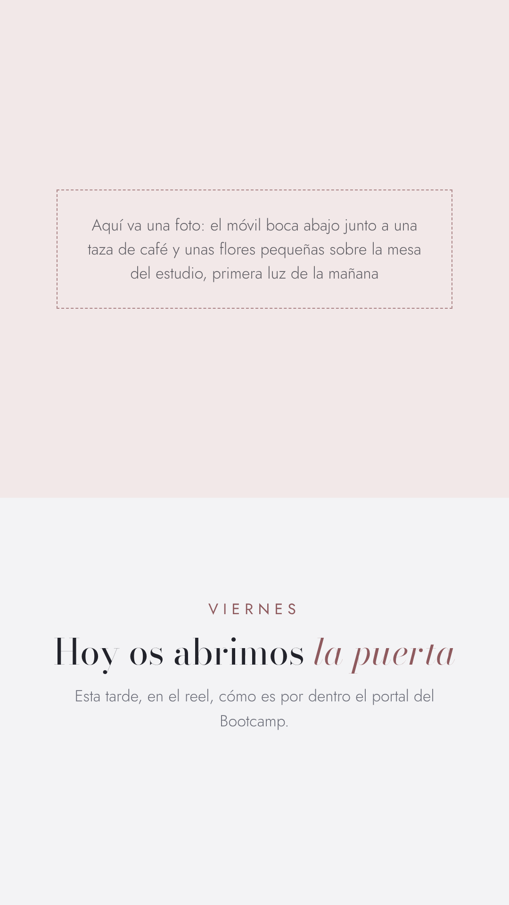
      <figcaption><span class="file">story-1-0830.png</span><span class="photo-note">Foto: el móvil boca abajo junto a una taza de café y unas flores pequeñas sobre la mesa del estudio, primera luz de la mañana</span></figcaption></figure>
    <figure id="story-2-1100-preguntas">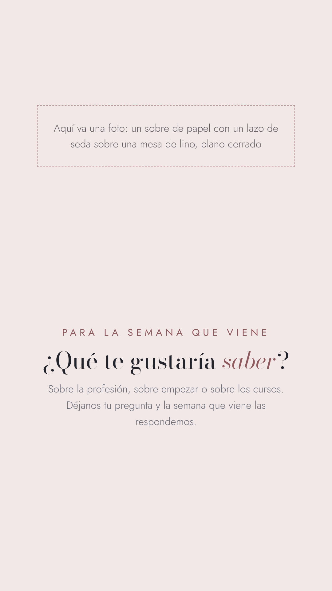
      <figcaption><span class="file">story-2-1100-preguntas.png</span><span class="photo-note">Foto: un sobre de papel con un lazo de seda sobre una mesa de lino, plano cerrado</span></figcaption></figure>
    <figure id="story-3-1300-bootcamp">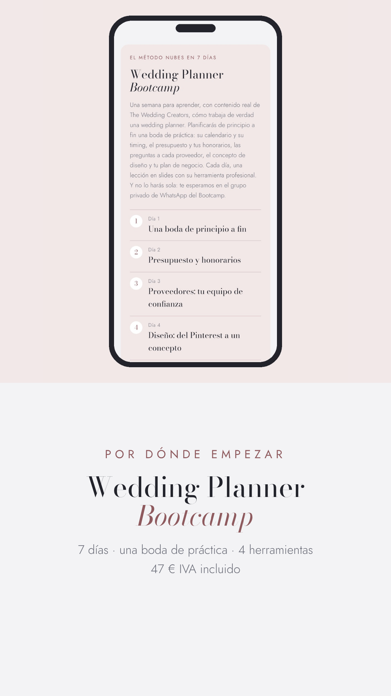
      <figcaption><span class="file">story-3-1300-bootcamp.png</span></figcaption></figure>
    <figure id="story-4-1600-web">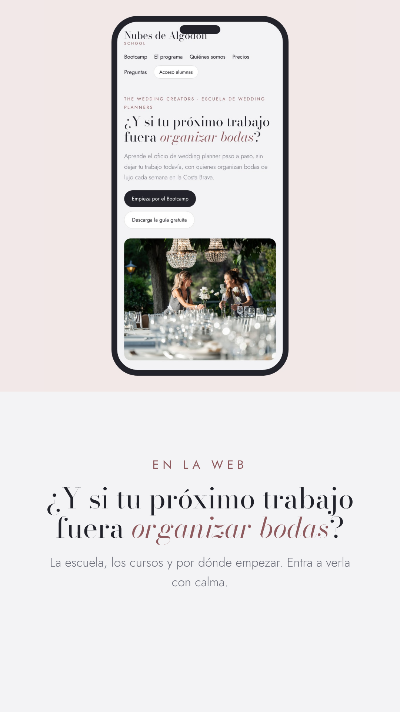
      <figcaption><span class="file">story-4-1600-web.png</span></figcaption></figure>
    <figure id="story-5-1800-herramientas">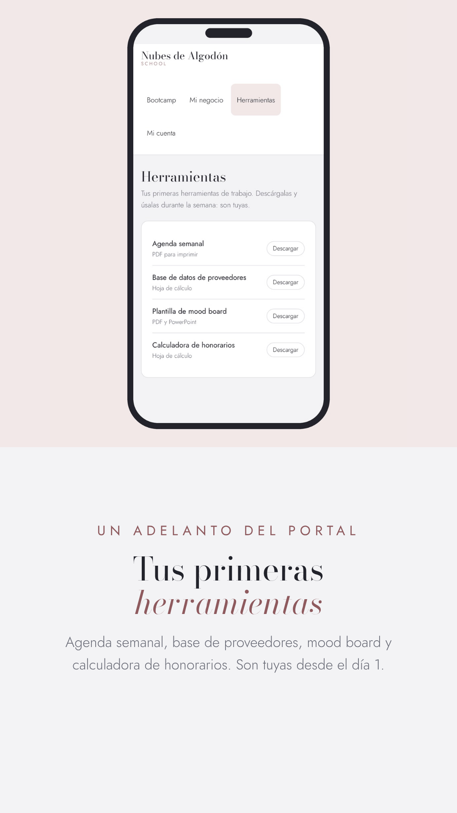
      <figcaption><span class="file">story-5-1800-herramientas.png</span></figcaption></figure>
    <figure id="story-6-2100-curso">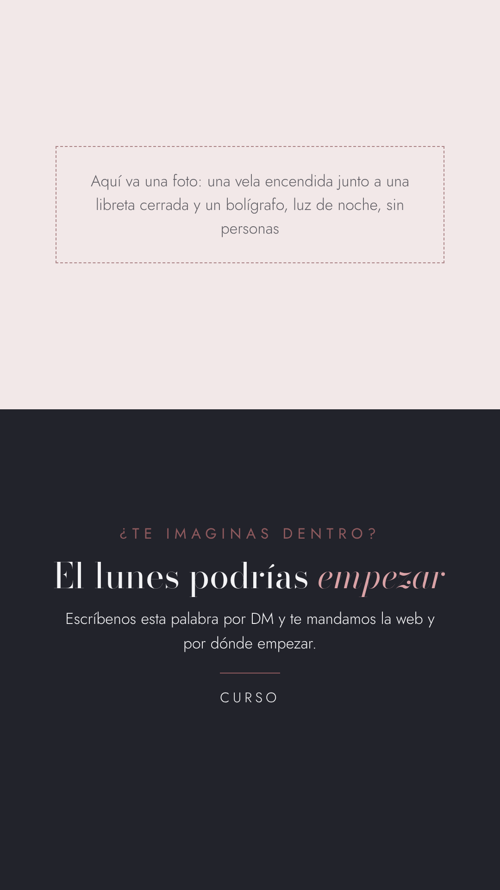
      <figcaption><span class="file">story-6-2100-curso.png</span><span class="photo-note">Foto: una vela encendida junto a una libreta cerrada y un bolígrafo, luz de noche, sin personas</span></figcaption></figure>
    <figure id="reel-01-portada">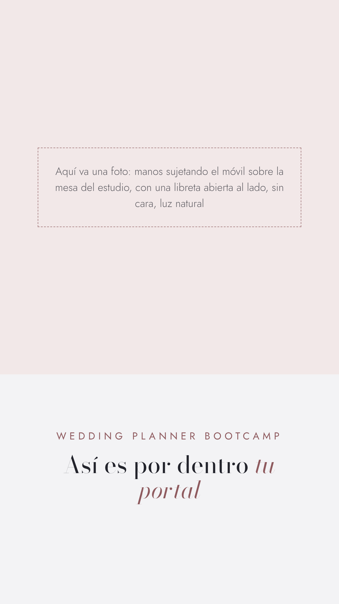
      <figcaption><span class="file">reel-01-portada.png</span><span class="photo-note">Foto: manos sujetando el móvil sobre la mesa del estudio, con una libreta abierta al lado, sin cara, luz natural</span></figcaption></figure>
    <figure id="reel-02">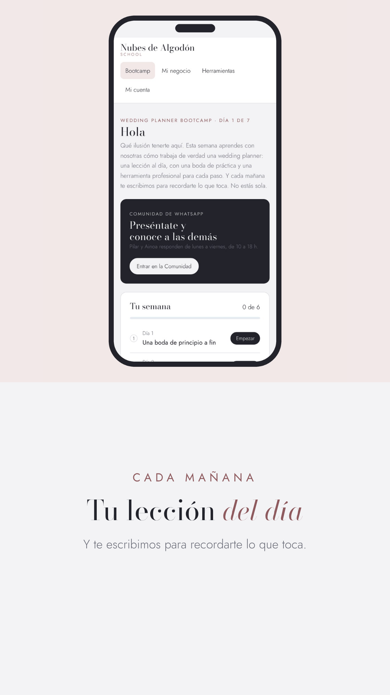
      <figcaption><span class="file">reel-02.png</span></figcaption></figure>
    <figure id="reel-03">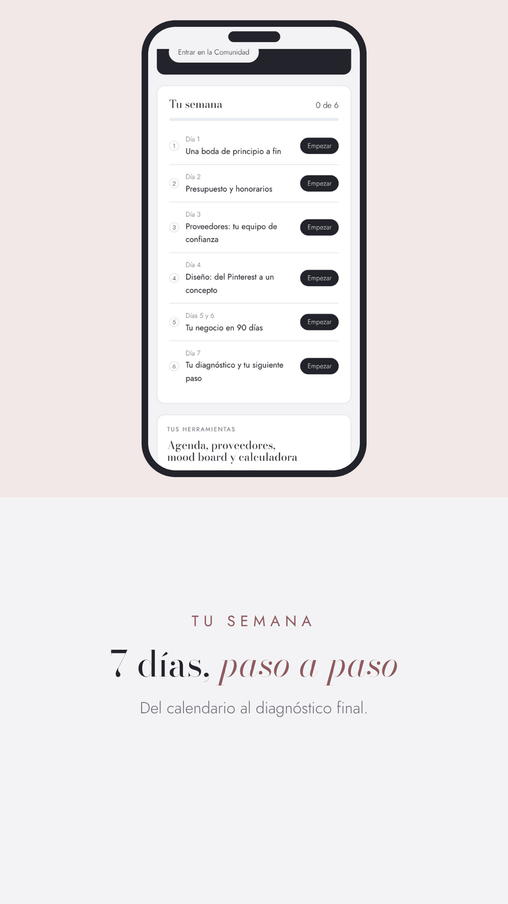
      <figcaption><span class="file">reel-03.png</span></figcaption></figure>
    <figure id="reel-04">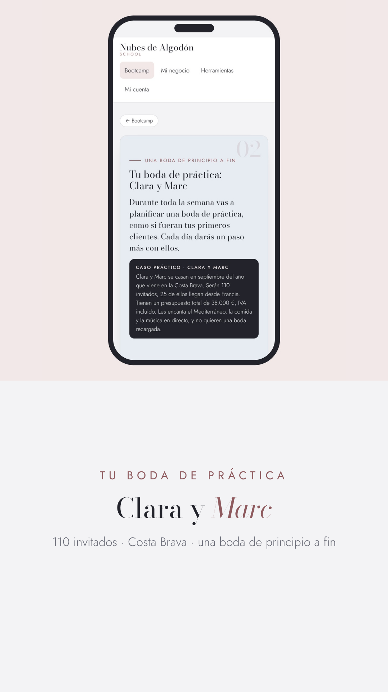
      <figcaption><span class="file">reel-04.png</span></figcaption></figure>
    <figure id="reel-05">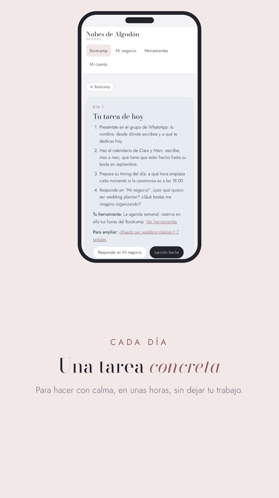
      <figcaption><span class="file">reel-05.png</span></figcaption></figure>
    <figure id="reel-06">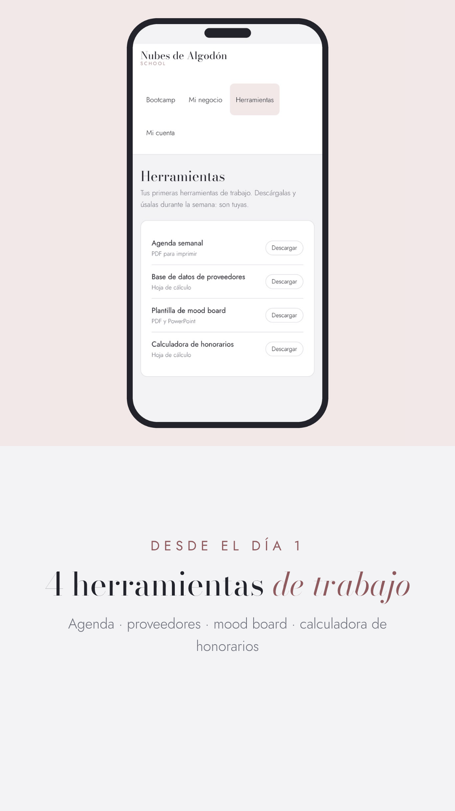
      <figcaption><span class="file">reel-06.png</span></figcaption></figure>
    <figure id="reel-07">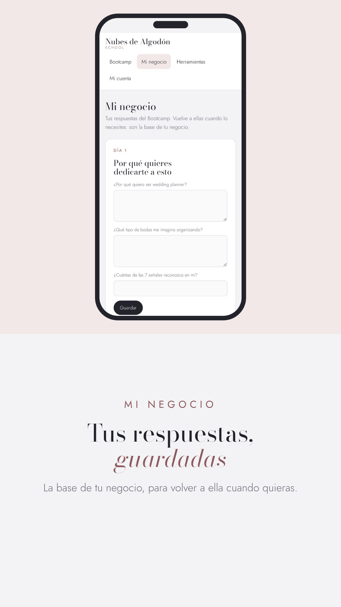
      <figcaption><span class="file">reel-07.png</span></figcaption></figure>
    <figure id="reel-08">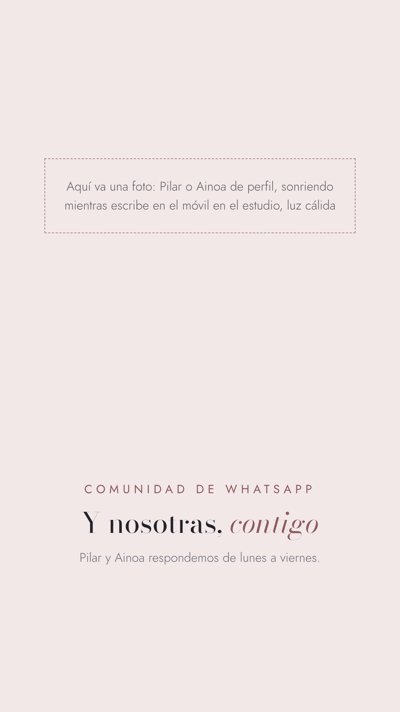
      <figcaption><span class="file">reel-08.png</span><span class="photo-note">Foto: Pilar o Ainoa de perfil, sonriendo mientras escribe en el móvil en el estudio, luz cálida</span></figcaption></figure>
    <figure id="reel-09">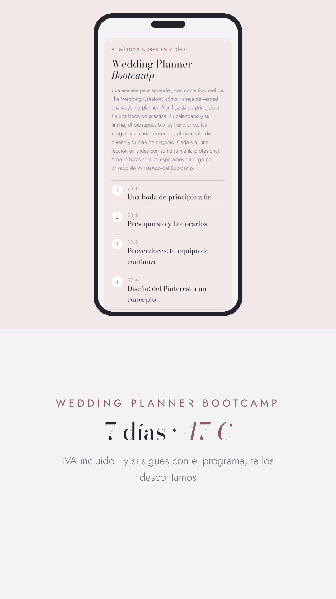
      <figcaption><span class="file">reel-09.png</span></figcaption></figure>
    <figure id="reel-10-final">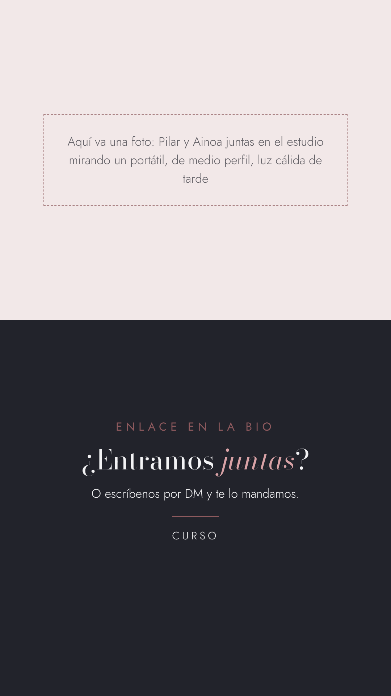
      <figcaption><span class="file">reel-10-final.png</span><span class="photo-note">Foto: Pilar y Ainoa juntas en el estudio mirando un portátil, de medio perfil, luz cálida de tarde</span></figcaption></figure>
  </div>
</section>
</main>
